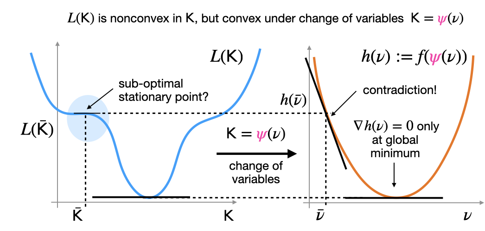

Research
My interests center around optimization and control of dynamical systems, with a particular focus on data-driven approaches. These days I’m especially interested in:
- problems blending discrete and continuous decisions,
- exploring the connections between reinforcement learning, adaptive control, and dual control,
- modeling dynamical systems from data, a.k.a system identification, and building digital twins.
Regarding applications, I’m currently actively working on:
- energy systems, especially battery management systems with Eatron Technologies,
- robotic motion planning, especially for robotic manipulators with Dexai Robotics.
Some representative projects are highlighted below.
Shortest paths in graphs of convex sets
 Many optimization and control problems blend discrete decisions (“go left or right around the obstace?”, “turn on/off a power generator?”) and continuous decisions (“how much torque to apply?”, “how much current to draw?”).
Such problems are fun to think about from an optimization perspective, because of the explicit combinatorial structure.
One recent attempt to blend discrete and continuous decision-making in an “optimization friendly” way is through graphs of convex sets.
So far, we’ve mostly applied the approach to robotic motion planning.
See here for higher-resolution videos (with special thanks to Mark Petersen).
If you’d like to play with graphs of convex sets, there’s a nice implementation in the software package Drake.
Many optimization and control problems blend discrete decisions (“go left or right around the obstace?”, “turn on/off a power generator?”) and continuous decisions (“how much torque to apply?”, “how much current to draw?”).
Such problems are fun to think about from an optimization perspective, because of the explicit combinatorial structure.
One recent attempt to blend discrete and continuous decision-making in an “optimization friendly” way is through graphs of convex sets.
So far, we’ve mostly applied the approach to robotic motion planning.
See here for higher-resolution videos (with special thanks to Mark Petersen).
If you’d like to play with graphs of convex sets, there’s a nice implementation in the software package Drake.
Convergence of direct policy search
A popular approach to reinforcement learning is direct policy search, which involves minimizing cost by optimizing directly over the parameters of the policy (controller). In most control problems, such an optimization problem is nonconvex. Given this nonconvexity, should we expect local search to find good policies, or get stuck in bad local minima?
 A number of nonconvex control problems are convex under a change of variables. The existence of such a “convex reformulation” implies that, even though the problem is nonconvex, it does not have any suboptimal local minima. A visual proof is given above: the main idea is that any stationary points in the nonconvex function must also appear in the convex function. One can prove that gradient descent over control paraemeters will converge to globally optimal solutions, despite nonconvexity. If you’re interested, you can read more here.
System identification with stability guarantees
 Predicting the long-term behavior of a dynamical system from past observations is a ubiquitous, but challenging, task in science and engineering.
If the system is “chaotic”, this is practically impossible.
In contrast, systems that “eventually forget” about past inputs - that is, are stable in some sense - can be easier to predict.
To make good predictions for stable systems, we should ensure that the models we learn are also stable. You can see a particularly dramatic illustration of the benefits of enforcing stability in the animation above, where the unstable learned model on the left eventually “blows up”.
This particular example in from this paper. If you’re interested, you can find other approaches that I’ve helped develop here and here.
Predicting the long-term behavior of a dynamical system from past observations is a ubiquitous, but challenging, task in science and engineering.
If the system is “chaotic”, this is practically impossible.
In contrast, systems that “eventually forget” about past inputs - that is, are stable in some sense - can be easier to predict.
To make good predictions for stable systems, we should ensure that the models we learn are also stable. You can see a particularly dramatic illustration of the benefits of enforcing stability in the animation above, where the unstable learned model on the left eventually “blows up”.
This particular example in from this paper. If you’re interested, you can find other approaches that I’ve helped develop here and here.